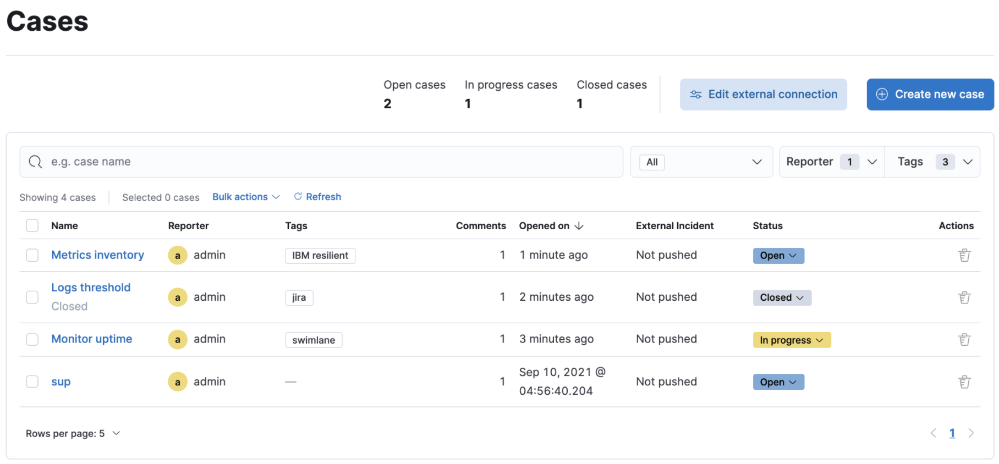

Casesedit
Cases are used to open and track observability issues directly in the Elastic Observability app. All cases list the original reporter and all the users who contribute to a case (participants). You can also send cases to third party systems by configuring external connectors.
